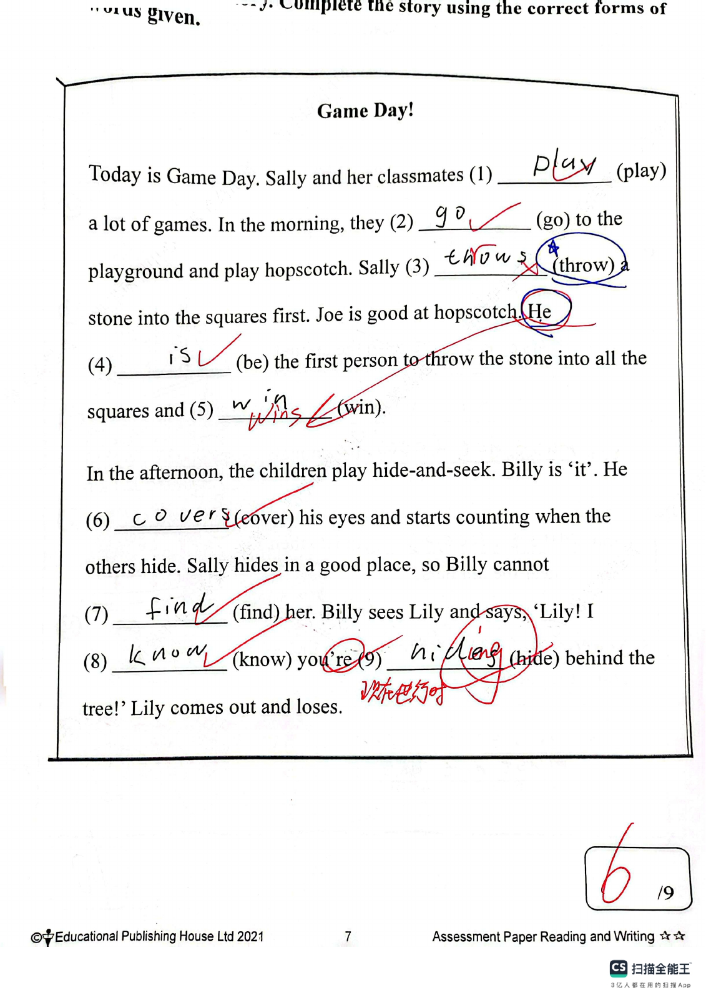

Answer: 7 seconds
已掌握
| # | 单词/词组 | 中文意思 | 例句/说明 | 已掌握 |
|---|---|---|---|---|
| noun 名词 | ||||
| 1 | birthday | 生日 | My birthday is in May. | |
| 2 | market | 市场 | There is a market near my home. | |
| 3 | uniform | 制服 | He wears a school uniform. | |
| 4 | twin | 双胞胎 | My twin brother and I have the same birthday. | |
| 5 | Tuesday | 周二 | We go swimming on Tuesday. | |
| 6 | Wednesday | 周三 | My piano lesson is on Wednesday. | |
| 7 | activity | 活动 | This activity is fun. | |
| 8 | plane | 飞机 | We travelled to Japan by plane. | |
| 9 | driver | 司机 | The bus driver stopped at the crossing. | |
| verb 动词 | ||||
| 10 | catch | 抓住 | Try to catch the ball. | |
| preposition 介词 | ||||
| 11 | above | 在……之上 | The clock is above the board. | |
| phrase 短语 | ||||
| 12 | take a photo | 照相 | I take a photo of my cat. | |
| noun phrase 名词短语 | ||||
| 13 | primary school student | 小学生 | I am a primary school student. | |
| 14 | swimming pool | 游泳池 | I swim in the swimming pool. | |
| adjective 形容词 | ||||
| 15 | popular | 流行的 | This song is popular with children. | |
| 16 | favourite | 特别喜欢的 | My favourite sport is basketball. | |
| adverb 副词 | ||||
| 17 | seldom | 很少 | I seldom eat sweets. | |
| uncategorized 未分类 | ||||
| 18 | wait | 等待 | Please wait for me at the gate. | |
| 19 | traditional | 传统的 | We eat traditional food at the festival. | |
| 20 | win | 赢得 | Our team hopes to win the match. | |
| # | 单词/词组 | 中文意思 | 例句/说明 | 已掌握 |
|---|---|---|---|---|
| adjective 形容词 | ||||
| 1 | enormous | 巨大的 | The elephant is enormous. | |
| 2 | wise | 明智的；聪明的 | The wise man gave good advice. | |
| noun 名词 | ||||
| 3 | punctuation | 标点符号 | Remember to use correct punctuation. | |
| 4 | advert | 广告 | I saw an advert for a new toy. | |
| 5 | photograph | 照片 | This photograph is beautiful. | |
| 6 | stationery | 文具 | I put my stationery in my bag. | |
| 7 | fin | 鱼鳍 | A fish has a fin. | |
| 8 | salad | 沙拉 | I had salad for lunch. | |
| 9 | dust | 灰尘 | There is dust on the shelf. | |
| 10 | ice-skating | 溜冰 | She likes ice-skating in winter. | |
| 11 | garlic | 大蒜 | I like vegetables with garlic. | |
| noun phrase 名词短语 | ||||
| 12 | the school play | 学校话剧 | We watch the school play every year. | |
| 13 | Test Week | 测试周 | Test Week is from 16th April to 20th April. | |
| 14 | a potato | 土豆；马铃薯 | First wash a potato and cut it open. | |
| 15 | a fork | 叉子 | Mix the egg with a fork. | |
| 16 | a watch | 手表 | I gave him a watch. | |
| 17 | Computer Studies | 电脑科 | Gopal is good at Computer Studies. | |
| verb 动词 | ||||
| 18 | fry | 煎；油炸 | Fry the bread on both sides. | |
| phrase 短语 | ||||
| 19 | hang up | 挂起 | Please hang up your coat. | |
| verb phrase 动词短语 | ||||
| 20 | play Chinese checkers | 下中国跳棋 | I can play Chinese checkers with my friend. | |
| 21 | playing board games | 玩桌面游戏 | We like playing board games. | |
| 22 | reading magazines | 读杂志 | She likes reading magazines. | |
| 23 | study for my exams | 备考；复习功课 | I was sick so I didn't study for my exams. | |
| 24 | take a nap | 小睡；打盹 | I take a nap after lunch. | |
| uncategorized 未分类 | ||||
| 25 | following | 接下来的 | Please answer the following questions. | |
| 26 | teenager | 青少年 | My brother is a teenager. He is fifteen. | |
| 27 | lucky | 幸运的 | I was lucky to find my lost key. | |
| 28 | suitable | 合适的 | These shoes are suitable for running. | |
| 29 | lantern | 灯笼 | We hung a red lantern by the door. | |
| 30 | detail | 细节 | Add one more detail to your drawing. | |
| # | 单词/词组 | 中文意思 | 例句/说明 | 已掌握 |
|---|---|---|---|---|
| time/date 时间日期 | ||||
| 1 | February | 二月 | February is the second month. | |
| 2 | April | 四月 | April is the fourth month. | |
| 3 | May | 五月 | May is the fifth month. | |
| 4 | Tuesday | 星期二 | Tuesday is a weekday. | |
| 5 | Thursday | 星期四 | Thursday is a weekday. | |
| 6 | Saturday | 星期六 | Saturday is a weekend day. | |
| time unit 时间单位 | ||||
| 7 | month | 月 | A month has many days. | |
| directions 方向 | ||||
| 8 | north | 北 | North is a direction. | |
| numbers 数字 | ||||
| 9 | four | 4 | Four is 4. | |
| 10 | seven | 7 | Seven is 7. | |
| 11 | forty | 40 | Forty is 40. | |
| solid shape 立体图形 | ||||
| 12 | quadrilateral prism | 四棱柱 | A quadrilateral prism has quadrilateral faces. | |
| 13 | pentagonal prism | 五棱柱 | A pentagonal prism has pentagonal faces. | |
| 14 | triangular pyramid | 三棱锥 | A triangular pyramid has triangular faces. | |
| 15 | pentagonal pyramid | 五棱锥 | A pentagonal pyramid has one pentagonal base and five triangular side faces. | |
| # | 单词/词组 | 中文意思 | 例句/说明 | 已掌握 |
|---|---|---|---|---|
| numbers 数字 | ||||
| 1 | 3-digit number | 三位数 | A 3-digit number has three digits. | |
| 2 | approximate value | 近似值 | The approximate value of 198 to the nearest ten is 200. | |
| geometry 几何 | ||||
| 3 | identical | 完全相同的 | These two triangles are identical in shape and size. | |
| 4 | dotted line | 虚线（点线） | Draw a dotted line between the two points. | |
| question word 题目词 | ||||
| 5 | calculate | 计算 | Calculate the answer. | |
| 6 | onwards | 向前；继续向前 | Count onwards from 20. | |
| answer 答案 | ||||
| 7 | result | 结果 | Check the result after you calculate. | |
| place value 位值 | ||||
| 8 | tens | 十位 | The digit is in the tens place. | |
| 9 | units | 个位 | The digit is in the units place. | |
| comparison 比较 | ||||
| 10 | more | 更多 | 8 is more than 5. | |
| 11 | fewest | 最少的 | Which group has the fewest? | |
| 12 | heavier | 更重的 | A 3 kg bag is heavier than a 2 kg bag. | |
| time/date 时间日期 | ||||
| 13 | hour hand | 时针 | At three o'clock, the hour hand points to 3. | |
| 14 | large division | 大格（钟面上相邻两个小时数字之间的一格） | The hour hand moves one large division in one hour. | |
| 15 | second hand | 秒针 | The second hand goes around the clock once in one minute. | |
| position 位置 | ||||
| 16 | above | 上面 | The clock is above the board. | |
| operations calculation 运算 | ||||
| 17 | product | 积 | The product is the answer in multiplication. | |
| 18 | division | 除法 | Division is the opposite of multiplication. | |
| 19 | divisor | 除数 | The divisor divides the dividend. | |
| 20 | horizontal form | 横式形式 | Write it in horizontal form. | |
| 21 | divide A by B | A 除以 B | Divide A by B. | |
| currency money 货币 | ||||
| 22 | cent | 分 | One cent is a small amount of money. | |
| 23 | coin | 硬币 | The coin is round. | |
| measurement 测量 | ||||
| 24 | millimeter | 毫米 | One millimeter is one tenth of a centimeter. | |
| 25 | width | 宽度 | The rectangle has a length of 8 cm and a width of 5 cm. | |
| position order 位置和顺序 | ||||
| 26 | following | 下面的 | Answer the following questions. | |
| directions tool 方向工具 | ||||
| 27 | compass | 指南针 | A compass shows directions. | |
| 句型结构 | ||||
| 28 | Angle ... is the largest. | 角......是最大的。 | Angle A is the largest. | |
| 29 | ... is to the south of ... | ......位于......的南侧。 | The library is to the south of the shop. | |
| 30 | ... is to the west of ... | ......位于......的西侧。 | The bank is to the west of the school. | |
